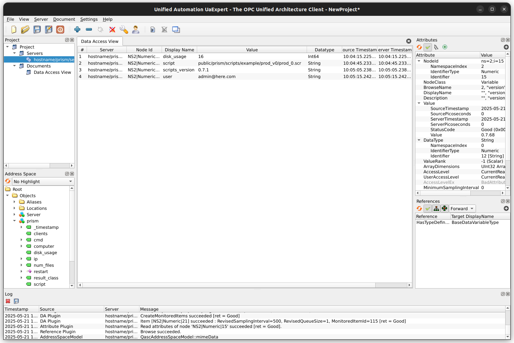

Manufacturing Execution System (MES) Integration¶
Manufacturing Execution Systems (MES) offer many benefits including enhanced visibility into production, improved efficiency, cost reduction, and better inventory monitoring.
The Prism-Lente framework supports integration using industry standard protocol OPC-UA. Information about the OPC-UA standard is available from the OPC Foundation:
OPC-UA Integration¶
Operation¶
Currently the status information uploaded to the upstream Lente server are published. Values are updated every 10 seconds.
The OPC-UA server must be enabled in the settings.json file. See settings section for details.
For development and testing a free client is available from Unified Automation:

Fields Published¶
cmd: Last command remotely executed
computer: Host name of host system
disk_usage: Percentage of file storage space consumed on drive where result files are stored
ip: IP address of host system
num_files: Number of result backup files are stored in result_bkup_dir
result_class: Not used
script (Prism only): Currently loaded Prism script (if any)
scripts_version: Version of the scripts directory
user: Currently logged in user (if any)
version: Version of the Prism/Lente base directory
clients (Lente only): Listing of downstream Prism/Lente systems and their attributes
Methods¶
restart: Restart Prism or Lente application; causes active users to be logged out.
Settings¶
opcua_server settings are defined in the settings.json.
Example settings:
"opcua_server": {
"enable": true,
"security_policies":[
"NoSecurity",
"Basic256Sha256_Sign",
"Basic256Sha256_SignAndEncrypt"
],
"certificates": {
"enable": true,
// "path": "public",
// "certificate_file": "cert.pem",
// "private_key_file": "key.pem",
}
}
OPC-UA Server¶
Section Name: opcua_server
Location: settings.json under top level
enable: If true, start opcua_server
default: false
listen_address: IP address for opcua_server to listen
default: 0.0.0.0
listen_port_prism: TCP port for Prism opcua_server to listen
default: 4840
listen_port_lente: TCP port for Lente opcua_server to listen
default: 4841
security_policies: List OPC-UA security policies to permit clients to connect with
Possible values: NoSecurity, Basic256Sha256_Sign, Basic256Sha256_SignAndEncrypt
Default: NoSecurity, Basic256Sha256_Sign, Basic256Sha256_SignAndEncrypt
fields: List of fields to publish (null: publish all)
Default: null (publish all)
Certificates¶
Certificate and key files can be the same ones as used by Prism/Lente to secure access using HTTPS. See HTTPS and SSL Certificates.
Section Name: certificates
Location: settings.json under section ‘opcua_server’
enable: If true, use certificates
default: false
path: Path to directory where certificate and private key files reside relative to the Prism or Lente root path
default: public
private_key_file: File containing private key
default: key.pem
certificate_file: File containing certificate
default: cert.pem